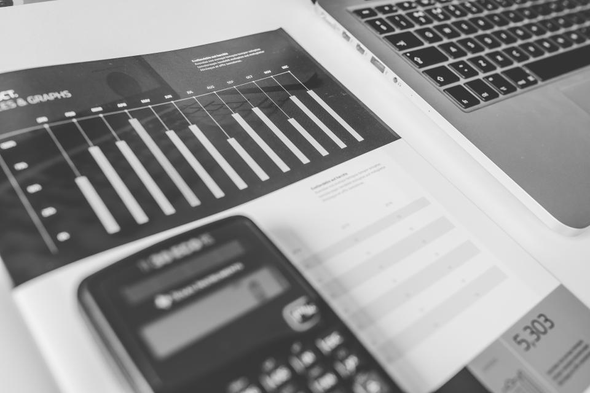

A01 · 財務與會計 主題吻合 手按計算機與財務作業會計主管 Banner實際有人操作計算機，符合筆記指定動作。色調偏暖、設備較舊；橫幅以手和計算機為主，保留可讀的標題區。 Wilfred Iven · 原圖 3785 × 2514CC0 1.0 · 2026-09-09 核對 作品與原圖下載 ↗查看授權 ↗
 A02 · 財務與會計 主題吻合 財務圖表與計算機財稅法律課程、財務文章黑白照片與 v1 的暖白、墨黑、紫色容易搭配。適合財報／會計主題卡片；沒有手部操作，因此不取代 A01 的具體需求。 Negative Space · 原圖 5472 × 3648CC0 1.0 · 2026-09-09 核對 作品與原圖下載 ↗查看授權 ↗
A03 · 企業與治理 可用於主題卡片 企業團隊討論企業管理、併購實務、到府服務穿著正式、互動自然，適合企業協商與工作討論。以一般情境圖呈現，人物不作為 TIRI 講師或委員介紹。 Direct Media · 原圖 6720 × 4480CC0 1.0 · 2026-09-09 核對 作品與原圖下載 ↗查看授權 ↗
A04 · 資本市場 主題吻合 資本市場行情分析資本市場文章、協會簡介配圖股票圖表和筆電直接對應資本市場；適合文章縮圖或簡介側圖。主體在左，橫幅需避免裁掉螢幕上的圖表。 Negative Space · 原圖 3888 × 2592CC0 1.0 · 2026-09-09 核對 作品與原圖下載 ↗查看授權 ↗
A05 · 課程與交流 可用於主題卡片 專業人士線上交流線上課程、時間彈性、會員服務視訊對談的手勢與電腦符合線上授課場景。與 A03 屬同一拍攝系列，同一頁建議擇一，避免反覆出現同一人物。 Direct Media · 原圖 6720 × 4480CC0 1.0 · 2026-09-09 核對 作品與原圖下載 ↗查看授權 ↗
A06 · ESG 主題吻合 再生能源與企業永續鄧白氏 ESG Banner、ESG 主題太陽能板、植栽與自然光同時呈現科技和環境，適合作為 ESG 環境面情境照。Banner 保留面板與上方天空，避免只剩一般風景。 Matt Bango · 原圖 8192 × 5464CC0 1.0 · 2026-09-09 核對 作品與原圖下載 ↗查看授權 ↗
A07 · 企業與治理 備選 企業辦公與會議空間到府服務配圖備選具有企業空間感，但較接近共享辦公環境。可用於到府服務情境；不列為正式董事會評估 Banner 的首選。 Matt Moloney · 原圖 6000 × 4000CC0 1.0 · 2026-09-09 核對 作品與原圖下載 ↗查看授權 ↗
A08 · 媒體與溝通 主題吻合 媒體溝通與發言媒體與危機管理、媒體委員會專業麥克風與留白直接對應媒體、發言及內容製作；不含現場人物，方便用在主題卡片。錄音室風格，並非 TIRI 活動實拍。 donterase · 原圖 4896 × 3264CC0 1.0 · 2026-09-09 核對 作品與原圖下載 ↗查看授權 ↗
A09 · 企業與治理 可作 Banner 候選 企業建築與專業形象加入會員 Banner、協會簡介橫式、上方暗部留白充足，適合搭配白色頁面標題；比一般握手照更接近企業受眾。這是一般企業形象情境照，不標成 TIRI 辦公室。 Verne Ho · 原圖 4657 × 3105CC0 1.0 · 2026-09-09 核對 作品與原圖下載 ↗查看授權 ↗